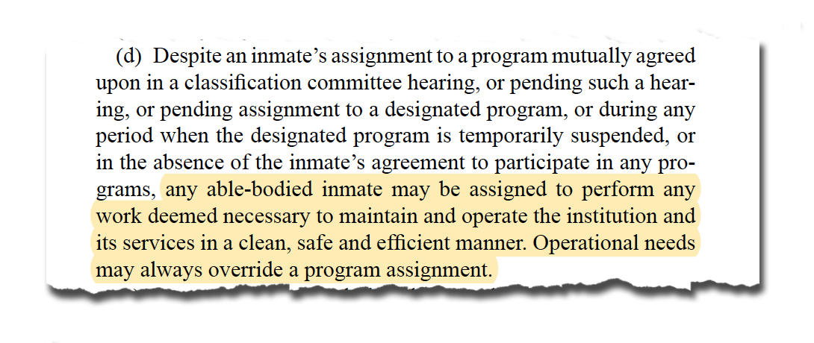
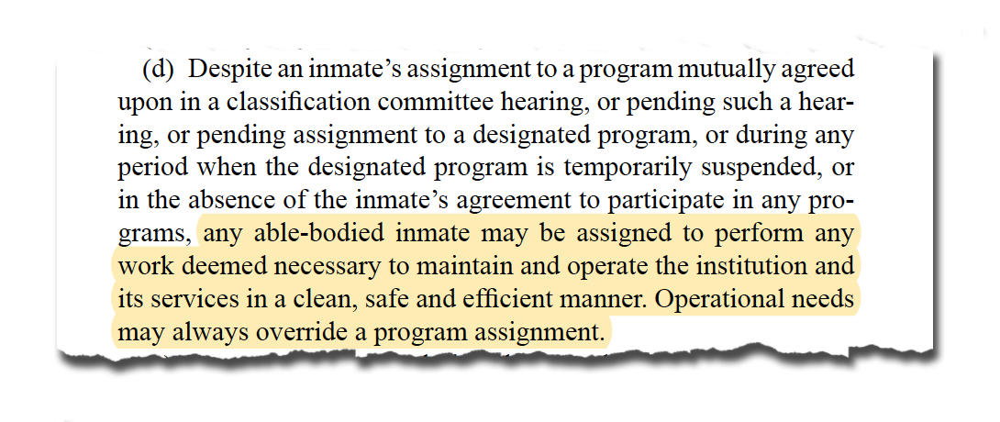

Despite earning the lowest wages, Brown said the pay would often make her ineligible for “an indigent pack” — the free hygiene kit supplied by the CDCR. Instead, she'd save for months for to buy the items. (Photo by Yutao Chen)
Janell Brown, 29, was paroled in August and spent almost a decade in several California prisons after being convicted for gun-related charges and grand theft auto. While in CCWF, she worked as a yard crew member, a porter and in the kitchen where she was assigned to wipe the dining tables between each 15-minute meal shift. She had to work quickly.
Brown says prison guards were constantly verbally abusive, especially if they deemed her or others too slow. “They would tell me: ‘Hurry the fuck up’, ‘What the fuck is your problem?’, ‘Are you fucking stupid?’,” Brown said. The cruel treatment still bothers her today. “If you want us to do a job, then you should treat us professionally.’”
According to a research study from the National Institute of Corrections (NIC), a key pattern of custodial misconduct in women’s correctional facilities, in addition to rape and sexual assault, is verbal degradation. Because so many women enter the criminal justice system with past abuses, exposure to this kind of environment can further impact existing PTSD, depression, anxiety, and other mental illnesses and disabilities.
Despite the belittling treatment, the jobs were an economic necessity for Brown. Brown grew up in group homes and foster care, like nearly 17 percent of women offenders nationally. Without family or friends who could add money into her account, she depended on her 8 cent hourly wage for basic supplies. Brown said she’d save for months in order to buy simple items such as soap or shampoo.
Brown said throughout each one of her prison terms, she asked to be placed in higher paying jobs such as fire camps, but was never given the opportunity.
The programming assignment that a CDCR prisoner receives is determined during their classification process, which takes place when they enter the facility. It decides two outcomes: the facility they’ll be placed in — for example, an open dormitory versus one with armed guards at the perimeter — and the amount of supervision they require. Minimum custody levels qualify for assignments that may take place outside the facility, while the highest custody levels require direct and constant supervision in the facility.
Terpstra is critical of CDCR’s inmate classification process, which was pioneered during the state’s prison boom in the 1980’s. He says the prison system is creates “different classes of prisoners.”
According to NIC's study, the classification system was also designed largely for a male population. Like the rest of the prison system’s policies and procedures, most of the assessment instruments were validated for male prisoners, which may make them inaccurate in calculating the risks and needs of women offenders. In fact, there’s a tendency to over-classify women, placing them at higher levels of custody or supervision than necessary.
Ryken Grattet — a UC Davis sociology professor who also once served as the CDCR’s assistant secretary for research and was part of the agency’s 2011 classification system expert panel — adds that classification works “to the extent that there's stability in the population.” He explained that despite the major policy and population changes of the past decade, the process has largely not been reevaluated.
Taylor Lytle was convicted of a drug conviction and served two years of a four-year sentence before being released early due to Proposition 47. (Photo by Yutao Chen)
Taylor Lytle was 23-years-old when she entered prison in 2013. Because she was a low-risk offender with a drug conviction, the Los Angeles native knew her low-level classification would qualify her for fire camps, but she wanted to avoid the program entirely. “I’m a heavyset person,” Lytle explained. At 5’10” and 310 pounds, the dangerous and highly physical demands of fire camp were something she didn’t think her body could endure safely; Lytle was intimidated by the training. “I just knew I couldn’t do it.”
Romarilyn Ralston, program director for Project Rebound at California State University Fullerton and a member of the California Coalition of Women Prisoners (CCWP), adds that though fire camps are considered privileged assignments, they’re often given to women who aren’t physically and mentally fit for the program because of the increased need during fire season. The NIC study notes that women frequently enter jails and prisons in poor health, and experience more serious health problems than their male counterparts.
After growing up in foster care since the age of 11, Lytle understood how to deftly navigate the state system: she got back on her psychotropic medication, knowing it would disqualify her from fire camp training, and was then transferred to the California Institution for Women (CIW) in Corona, where she was put to work in the prison’s kitchen.
While she avoided the physical demands of firefighting training, Lytle compared kitchen work to slavery, calling it “the worst job” in prison, not only because of its responsibilities but also the way she was treated in the prison kitchen.
“Because of my sexuality, I always felt like it was a big issue with male staff and their bravado,” said Lytle, who describes herself as “butch.” Because of the bullying she endured at the hands of one correctional officer in particular while in the kitchen, Lytle would often refuse to go to work, which resulted in frequent 115’s, or write-ups: “I always dealt with being a target because of my size...everybody wants to break down the biggest person.”
Lytle was almost transferred to a higher security level facility, but a reduction in sentences for drug convictions under Proposition 47 meant she received an early release midway through her four-year sentence. She worked in the kitchen until the very end of her term.
Ralston says incidents like Lytle’s are an example of how privileges within women’s prisons are dictated by how you look — not only in the treatment received by prison guards and staff, but also in opportunities for higher-wage jobs. She says classification committees “size women up” for different roles, based on physical attributes and appearance. For more privileged jobs, like clerical work, that involve less hard labor, the CDCR seeks a certain type of woman: “They usually hire women who are girly, pretty, soft-spoken, obedient, compliant,” said Ralston.
“I felt like the men were perverts…They would always say shit about how I’m so pretty and flirt with me…The power and authority they had: I felt so stuck, like I had to take it,” said Jayde Amato, 31. (Photo by Yutao Chen)
Jayde Amato, a 31-year-old, long-haired brunette from Huntington Beach, checked off many of these physical requirements. She entered the state’s prison system in 2011 at the age of 23 after getting into a fight with another woman, and was sentenced for assault with a weapon and great bodily injury. Amato served a majority of her sentence at CCWF. Throughout her seven years in prison, she moved through higher level opportunities, including auto body training, electrical work, cosmetology and the dental lab, one of the programming opportunities offered by the California Prison Industry Authority (CALPIA).
CALPIA is considered one of the top tiers of work programming for prisoners. It operates as a semi-autonomous agency within the prison system that sells 1,500 prisoner-produced goods and services to the state agencies and entities, such as the Department of Motor Vehicles.
Commonly referred to as “correctional industries,” these state-owned businesses give prisoners diverse training opportunities, ranging from more advanced skills like computer coding and commercial diving, to manufacturing prisoner uniforms, furniture and denture-making, egg production and state administrative services.
From the start, Amato was determined to avoid being placed in the kitchen. “It’s like the lowest of the low. I heard of other jobs and I didn’t want to start at the bottom,” said Amato. She approached department heads and program supervisors to try to land in a better position. But she says it was more than her hustling that helped.
“All those jobs? I got them because I knew if I was face-to-face with them, I could just sit there, bat my little eyelashes, make sure I look really cute,” said Amato. She eventually landed in a clerical position, which paid the highest wage she ever earned: 45 cents per hour.
But her feminine appearances also came with its own set of challenges: constant harassment from one of the officers she clerked for — a man Amato says took advantage of the power he had over her, and would often comment on her looks and tell her how pretty she was. “He’d stand so close to me and it was so uncomfortable, being asked personal questions that had nothing to do with the job,” said Amato. “I felt like I was held captive, even within the prison, by the people who are supposed to be watching over me or making sure I’m okay.”
From 2011 to 2015, the number of reported allegations of sexual victimization in correctional facilities nearly tripled. Specifically, sexual misconduct and harassment of prisoners by staff accounted for more than 60 percent of this total increase.
Amato says being placed into higher-paying and higher-level positions, like those with CALPIA allowed her to demonstrate good behavior, which resulted in a reduction of her prison sentence by over a year and a half. It also allowed her to segue into a transitional housing facility, which provided vocational and counseling services that Amato says were critical for preparing her for her reentry.
Chuck Pattillo is the longest serving general manager of CALPIA who retired in January after heading the entire organization for 14 years. He believes its programs are a model for successful rehabilitation by directly linking to jobs that are in demand in California. Pattillo says that setting up a prisoner to find work quickly is key to lower recidivism.
“You want to move them to self-sufficiency faster and a job is the fastest way to make somebody self confident, self sufficient. Unless the person can support themselves, they don't feel their worth,” Pattillo said.

Angelica Sanchez says that because the chow hall is usually the main social event of the prison day, fights would often break out. (Photo by Yutao Chen)
Angelica Sanchez, 39, was released from prison in 2006 after serving two years, but struggled with her sobriety. She says much of it stemmed from her inability to find stable work without any formal work training.
Sanchez says prison kitchens are like a “little cartoon beehive,” and are dangerous for workers. It’s easy to slip while carrying large pots or get burned on a stove or fryer. During her two years at CIW, she said prisoners were never given any kind of safety training other than being handed a hair net, and that incoming workers relied on other prisoners to show them the ropes.
She recalls her time in the kitchen as “degrading,” and claims she was never paid for her work: “Prisons belittle you, they make you feel like shit.” Sanchez, a mother of six, gave birth to one of her daughters in 2005 while she was still in prison. According to a report from the Bureau of Justice Statistics, more than 60 percent of female prisoners are mothers of minor children.
Ralston says this inherently changes the way a woman copes with imprisonment — self-preservation becomes a priority so that the women can get home to their families. “You can’t have feelings in there, you can’t dwell on shit because either you’re gonna want to kill yourself, or you just gotta survive,” said Sanchez.
Sanchez has only just found steady employment recently as a baker with Homeboy Bakery, a social enterprise organization in downtown Los Angeles that trains and hires formerly incarcerated people. It’s Sanchez’s first real job; she had only sold dope her entire life.


 
